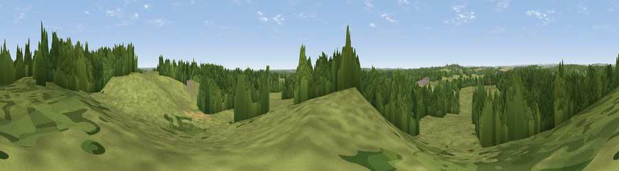

Viewpoint near Woodlands
#38133 in England · top 67% of its area beats it · near WoodlandsWhere it is
The exact computed spot (SU 05975 07325). Click the marker for map links.
The view, rendered

A 360° render of this exact spot computed from the terrain model, tree cover and land cover — summer colours, afternoon light, calibrated against photographs of famous viewpoints. Real trees, hedges and buildings will differ in detail.
The panorama
Grey silhouette: terrain skyline in each direction (720 bearings, Earth curvature and refraction included). Dashed green: skyline with trees (+15 m) and buildings (+8 m) as obstacles. Blue strip: how far the ground is visible on each bearing.
Where the view opens
Wedge length = distance to the farthest visible ground on that bearing (vegetation-aware). Rings at 10, 25 and 50 km.
What fills the view
58% grassland · 38% woodland · 3% cropland ·
Angular shares of the visible panorama (visual magnitude), not map area. Landscape diversity 0.37 (0–1 Shannon).
Key numbers
More beautiful places nearby
The staircase of upgrades: each row has a higher view potential than everything closer. Driving times are estimates from straight-line distance, calibrated against real road routing — check an actual route before setting out.
| Place | Direction | Drive | Score |
|---|---|---|---|
| Viewpoint near Woodlands | NE · 1 km | ~3 min | 34.7 |
| Bull Barrow | SSW · 2 km | ~6 min | 36.0 |
| Viewpoint near Woodlands | NW · 4 km | ~8 min | 41.2 |
| Viewpoint near Verwood | NE · 4 km | ~9 min | 41.8 |
| Chalbury Hill | W · 4 km | ~10 min | 56.5 |
| Viewpoint near Cranborne | NNW · 10 km | ~19 min | 65.0 |
| Trow Down | NNW · 17 km | ~30 min | 67.5 |
| Monk's Down | NW · 19 km | ~32 min | 74.4 |
50.86540, -1.91647 · source: screening · position refined by local search. Computed location — check access rights before visiting.